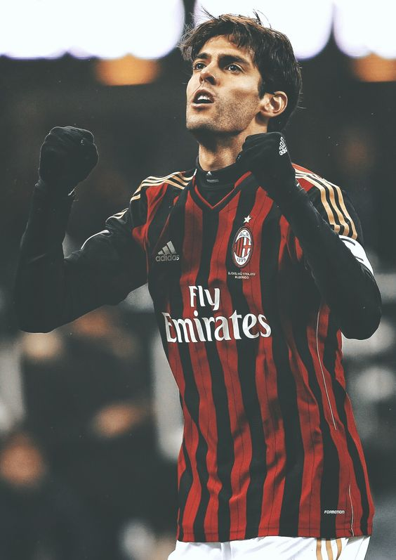
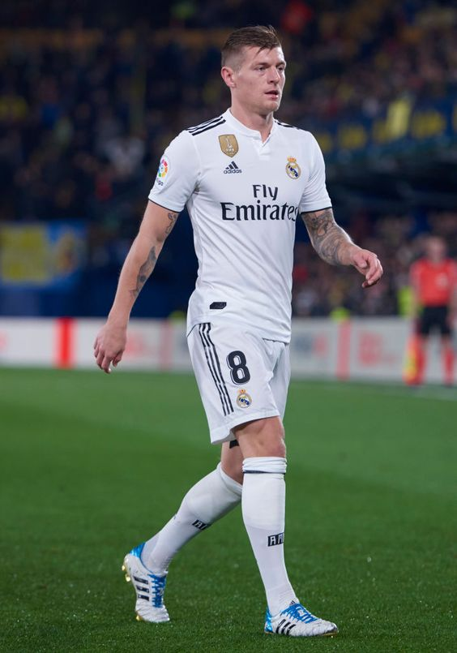
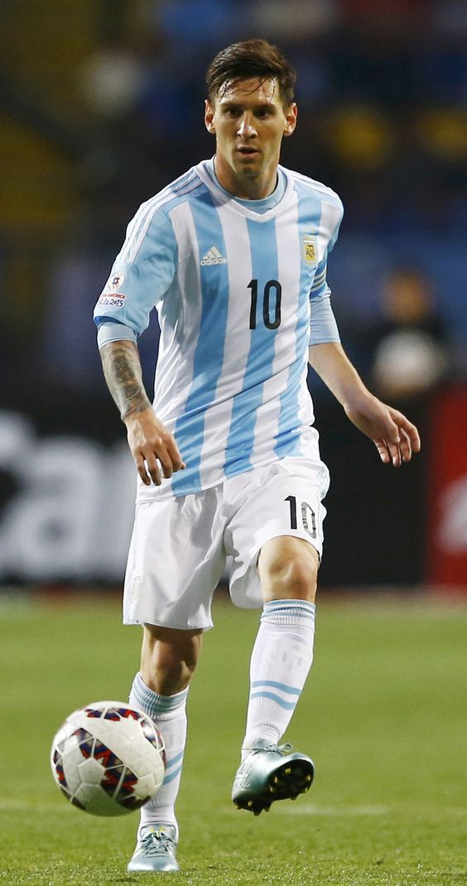
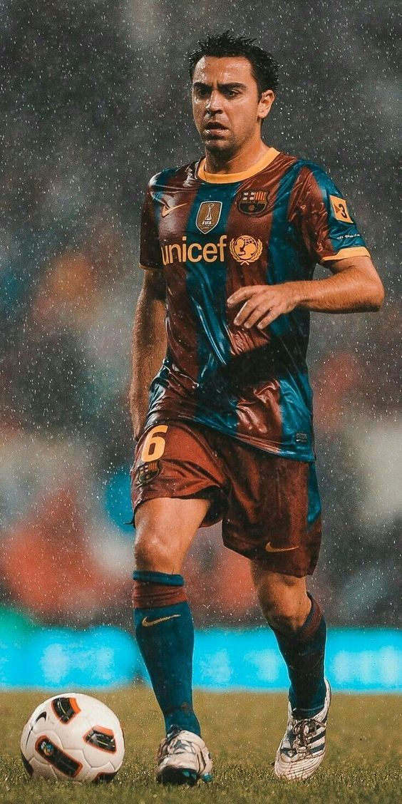

-

- 
- 
- 
- 
De Bruyne
Kevin De Bruyne nasceu em Drongen, Bélgica, no dia 28 de junho de 1991. Iniciou a carreira no clube da sua cidade, em 1997, mas dois anos depois se juntou ao Gent nas categorias de base do clube. Em 2005, foi transferido para o Genk e promovido para a equipe principal em 2008. Entretanto, De Bruyne fez sua estreia somente em maio de 2009. Ficou na equipe até o final de 2011, marcou 17 gols em 113 partidas. Além disso, conquistou a Copa da Bélgica em sua primeira temporada, o Campeonato Belga e a Supercopa da Bélgica na seguinte. Em janeiro de 2012, foi contratado pelo Chelsea por cinco anos e meio, mas permaneceu no Genk até o final da temporada. Em agosto do mesmo ano, foi emprestado por uma temporada ao Werder Bremen. Retornou ao Chelsea em julho de 2013. Com pouco espaço na equipe inglesa, De Bruyne assinou com o Wolfsburg em janeiro de 2014. Em sua primeira temporada, foi eleito o Melhor Jogador da Bundesliga e da Copa da Alemanha 2014-15. Conquistou a Copa da Alemanha e a Supercopa da Alemanha. Em agosto de 2015, De Bruyne foi contratado pelo Manchester City, sendo a transferência mais cara da história do clube e o jogador belga mais caro da história. Com a equipe inglesa, venceu a Premier League por duas vezes, a Copa da Inglaterra e a Supercopa da Inglaterra uma vez cada, e a Copa da Liga Inglesa por três vezes. De Bruyne foi convocado pela primeira vez na Seleção Belga para a Copa do Mundo de 2014. Participou da Eurocopa de 2016 e da Copa do Mundo de 2018, sendo o terceiro colocado nesta última. Kevin De Bruyne é casado com Michèle Lacroix desde junho de 2017. O casal tem dois filhos: Mason e Rome.
Kaka
Ricardo Izecson dos Santos Leite, mais conhecido como Kaká, foi um importante jogador da história do futebol brasileiro, com importantes passagens por clubes da Europa. Nascido no dia 22 de abril de 1982, o ex-jogador foi revelado pelo São Paulo no ano de 2001. A história de Kaká no clube do Morumbi é muito vitoriosa e com muita identificação. Na primeira passagem, foram 131 jogos e 48 gols marcados. Natural de Gama, no Distrito Federal, o ex-meia se destacou muito com a camisa do Tricolor e despertou o interesse de grandes equipes da Europa. Com uma proposta do Chelsea, o brasileiro preferiu se transferir ao Milan, que tinha acabado de se tornar campeão europeu. Kaká encontrou na equipe italiana diversos brasileiros, como Dida, Cafu e Roque Júnior. A transferência aconteceu no ano de 2003. Logo no ano de sua chegada, o Milan conquistou o Campeonato Italiano. A chegada do ex-jogador surpreendeu a todos, já que, inicialmente, Kaká veio para ser reserva. O ótimo desempenho do brasileiro fez com que se tornasse titular da equipe pouco tempo depois de sua chegada. Permaneceu no clube até 2009 e conquistou muitos títulos. Venceu a Champions League na temporada 2006-2007 e o Mundial de Clubes, em 2007. Neste ano, o brasileiro foi eleito o melhor jogador do mundo pela FIFA.
Kroos
LifeBogger apresenta a história completa de um gênio do meio-campo mais conhecido pelo apelido; "O garçom". Nossa história de infância de Toni Kroos mais fatos de biografia não contados traz para você um relato completo de eventos notáveis de sua infância até hoje. A análise envolve sua história de vida antes da fama, vida de relacionamento com Jessica Farber, vida familiar e muitos fatos pouco conhecidos OFF-Pitch sobre ele.
Messi
Lionel Messi (1987) é um jogador de futebol argentino, um dos melhores atacantes do mundo. Com habilidade técnica e uma velocidade excepcional, foi eleito sete vezes o melhor jogador de futebol do mundo conquistando o troféu Bola de Ouro em 2009, 2010, 2011, 2012, 2015, 2019 e 2021. Em 2022, Messi se destacou na Copa do Mundo do Catar e levou a Argentina a Conquistar o título de Campeã do Mundo. Messi recebeu o troféu de Melhor Jogador da Copa. Durante os 21 anos que jogou no Barcelona, Messi tornou-se o maior artilheiro da história do clube, com 672 gols em 778 jogos. Foi o jogador que mais marcou gols em uma única temporada: 91 gols em 2012. Messi foi o jogador que mais conquistou títulos com o clube catalão, 34 no total, incluindo quatro ligas dos campeões (2006,2009, 2011 e 2015) e dez campeonatos espanhóis. Desde 2021 joga no Paris Saint-Germain (PSG). Lionel Andrés Messi nasceu em Rosário, Argentina, no dia 24 de junho de 1987. Desde a infância mostrou interesse pelo futebol. Jogou em um pequeno clube chamado Abanderado Grandoli, localizado perto de sua casa. Com 7 anos, Messi começou a jogar no Newell's Old Boys. Quando estava com 11 anos, foi diagnosticado com um problema hormonal que retardava seu crescimento. A partir de então, Messi foi submetido a um tratamento hormonal.
Xavi
Xavier Hernández, popularmente conhecido como Xavi, nasceu em Terrassa, cidade na região da Catalunha, Espanha, no dia 25 de janeiro de 1980. Xavi iniciou a carreira nas categorias de base do Barcelona, em 1991. Em 1998, Xavi foi promovido para a equipe titular do Barcelona. O talento do meio-campista chamou a atenção do então técnico Louis van Gaal, e no seu jogo de estreia, marcou seu primeiro gol pelo clube. Além disso, foi na sua temporada de estreia que conquistou seu primeiro título, o Campeonato Espanhol de 1998-99. Ao todo, Xavi ficou 17 anos no Barcelona, e é o jogador com o maior número de partidas na história do clube, com 769. Ao lado de Lionel Messi e Andrés Iniesta, marcou uma das melhores épocas no Barça. Conquistou 32 troféus, e é o terceiro jogador espanhol com mais títulos na história, atrás somente de Gerard Piqué e Iniesta. Xavi ajudou a equipe a conquistar quatro Champions League e oito Campeonatos Espanhóis. Em março de 2015, Xavi foi anunciado como jogador do Al-Sadd. Com a equipe, o meio-campista foi campeão de quatro títulos em suas três temporadas no Qatar. Ao todo, foram 86 jogos e 22 gols. Xavi anunciou a sua aposentadoria como jogador em maio de 2019.